Rio de Janeiro (/ˈʁi.u d(ʒi) ʒɐˈnejɾu/2), souvent désignée simplement sous le nom de Rio, est
par sa population la deuxième ville du Brésil après São Paulo. Située dans le Sud-Est du
pays, elle est la capitale de l'État de Rio de Janeiro après avoir été celle du Brésil jusqu'en 1960.
Avec ses 6,5 millions d'habitants dans la ville en 20214 (communément appelés Cariocas, la variante Carioques existant aussi en français) et 12,62 millions dans l'aire urbaine, Rio de
Janeiro est l'une des métropoles les plus importantes du continent américain.
Surnommée La Ville Merveilleuse (Cidade Maravilhosa)5, elle est mondialement connue pour son carnaval, ses plages (Copacabana, Leblon et Ipanema), son Pain de Sucre, sa statue du Christ Rédempteur au sommet du
Corcovado ou encore son stade du Maracana. Plus importante destination touristique internationale au
Brésil, en Amérique latine et dans tout l’hémisphère sud (en 2008), Rio de Janeiro est la ville
brésilienne la plus connue à l’étranger, fonctionnant comme un « miroir » national, que ce soit positivement ou négativement. Elle fut successivement la capitale de la colonie portugaise du Brésil
(1763-1808), capitale du Royaume-Uni de Portugal, du Brésil et des Algarves, à la suite de la fuite de la cour portugaise lors de l'invasion des troupes napoléoniennes (1808-1821), puis de l'empire du Brésil
(1822-1889), de la República Velha (1889-1930), de l’Estado Novo (1937-1945) et du début de la Deuxième
République jusqu'en 1960 et le déplacement de la capitale à Brasilia. Une partie de la ville a été
désignée site du patrimoine mondial par l’UNESCO le 1er juillet 2012.
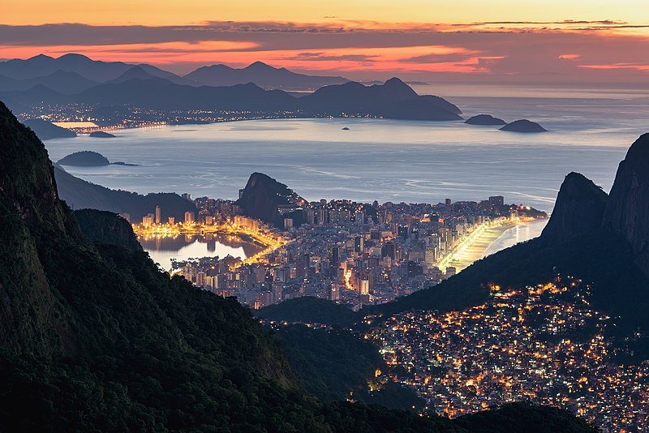
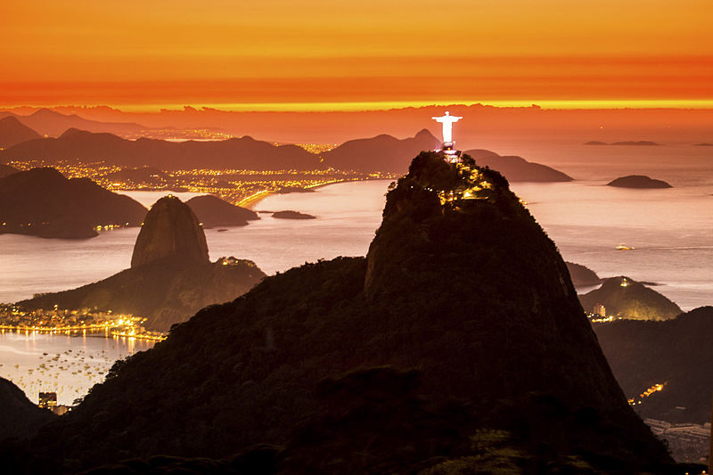
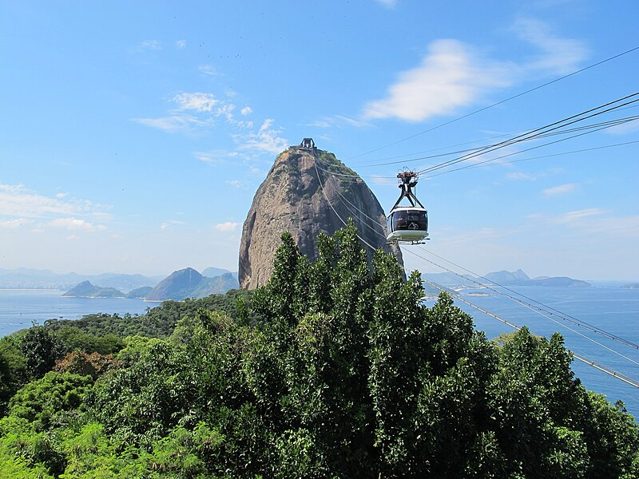
LITTORAL ET PLAGES DE RIO
Le littoral de Rio est long de 197 kilomètres et comprend plus d’une centaine d’îles qui
occupent 37 km2, et se déploie en trois parties : face à la baie de Sepetiba, face à l’océan
Atlantique et face à la baie de Guanabara. La côte de la baie de Sepetiba est sablonneuse,
basse et peu découpée. La côte de la baie de Guanabara est très découpée, basse, comporte de nombreuses îles (comme celle du Gouverneur avec 29 km2 ou celle de Paqueta)livro 1 .
La baie de Guanabara est profonde de trente kilomètres. Son entrée est gardée par deux forts des xviie et xixe siècles.
Il est facile de traverser la baie de Guanabara pour se rendre à Niterói ou dans les îles,
d'où l'on découvre une vue magnifique de la ville de Rio et des montagnes luxuriantes qui la sertissent. L'étape la plus intéressante est l'île de Paquetá, une des 84 îles de la baie, où le
paysage n'a pas changé depuis le xixe siècle. Dans cette île, les voitures ne sont pas
autorisées. La plus grande de toutes est l'Ilha do Governador (« Île du Gouverneur »), où est situé l'aéroport international Antônio Carlos Jobim.
La côte atlantique, moins découpée, présente une alternance considérable, parfois à une certaine hauteur, au contact des branches côtières des massifs de Pedra Branca et de Tijuca, ou basse, un tronçon à travers
lequel s’étendent les plages intégrées au paysage urbain. Les principales lagunes de la ville sont
Marapendi, Jacarepaguá et Rodrigo de Freitas. Elles se sont formées dans les basses terres, beaucoup de terrains marécageux pas encore complètement drainés .
Les forêts tropicales recouvrent plus de 90 % du territoire de Rio. Une grande proportion de ce territoire fut dévastée par l'urbanisation et les plantations (café, sucre). Les rares sites préservés de toute trace
humaine se trouvent en général sur les pics des chaînes de montagnes. La ville de Rio jouit également de la plus grande forêt urbaine du monde32, la « Floresta da Tijuca », un vestige de la Forêt atlantique
(Mata atlântica), fut préservée à l'intérieur même de la ville. La rivière la plus importante de Rio est la « Paraíba do Sul » qui provient de São Paulo et qui marque la frontière entre l'État de Rio de Janeiro et celui du Minas Gerais.
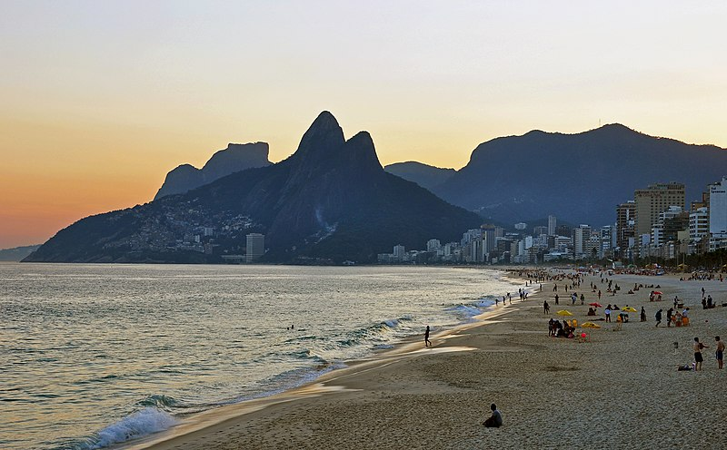
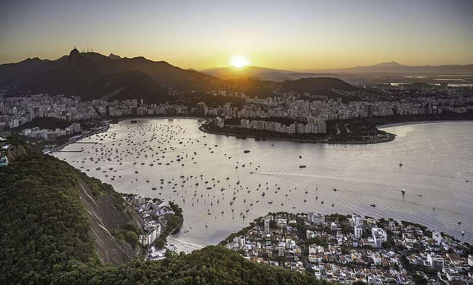
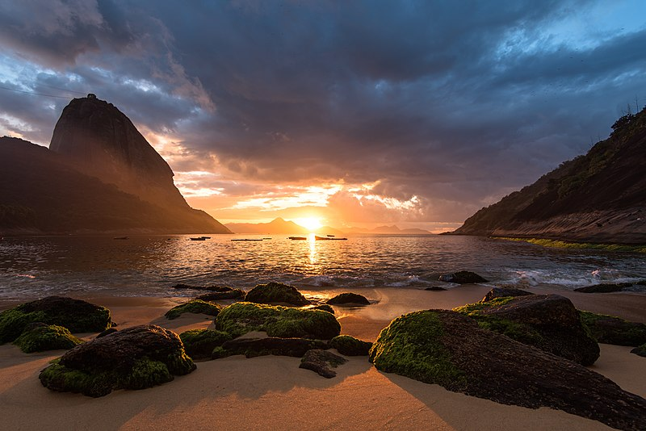
LE METRO DE RIO
Le métro de Rio fut ouvert au public en 1979. Ses trois lignes qui desservent 41 stations totalisent 57 kilomètres, dont dix kilomètres ne sont pas souterrains :
Ligne 1 (Uruguay x Jardim Oceânico) ;
Ligne 2 (Pavuna x Botafogo) ;
Ligne 4 (Ipanema x Barra da Tijuca).
En juin 2010, la construction de la ligne 4 a commencé. Elle relie Ipanema au quartier Barra da Tijuca.
Il s'agissait d'un projet en vue des Jeux olympiques d'été de 2016, dont les compétitions sportives sont basées en grande partie à La Barra da Tijuca.
ceanico52. Sur son trajet, la ligne permet également de desservir d'autres quartiers de la zone sud de Rio de Janeiro : Leblon, Gávea, São Conrado et Rocinha.
Depuis 2014, la Gare Central do Brasil est reliée par le téléphérique de Providência à la favela Morro da Providência (pt).
Tramway de Rio de Janeiro.
La ville possède deux réseaux de tramway :
l'historique Tramway de Santa Teresa, ouvert en 1875 et pittoresque, composé de deux lignes. Il relie le centre-ville au quartier de Santa Teresa ;
le Tramway de Rio de Janeiro (VLT) inauguré en juin 2016 en vue des Jeux olympiques d'été de 2016. Depuis 2019, il compte 3 lignes, 29 stations et totalise 28 km au total.
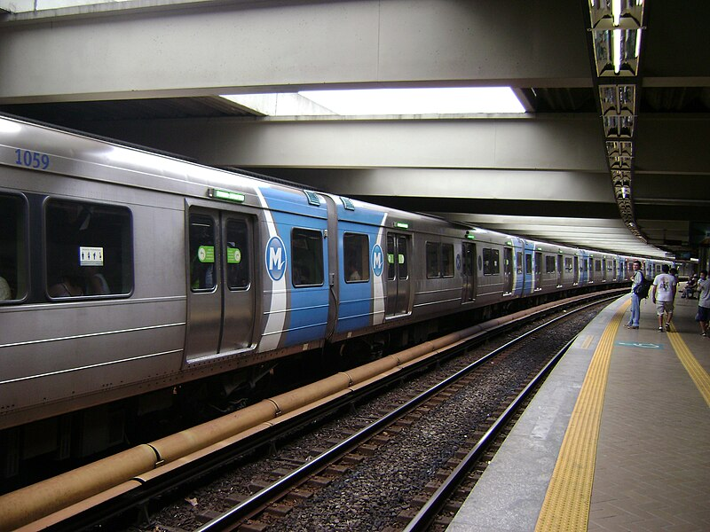
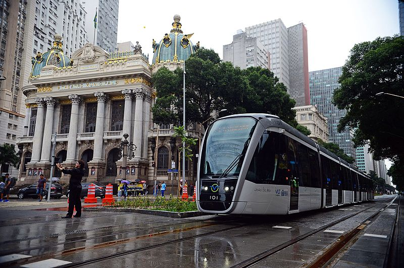
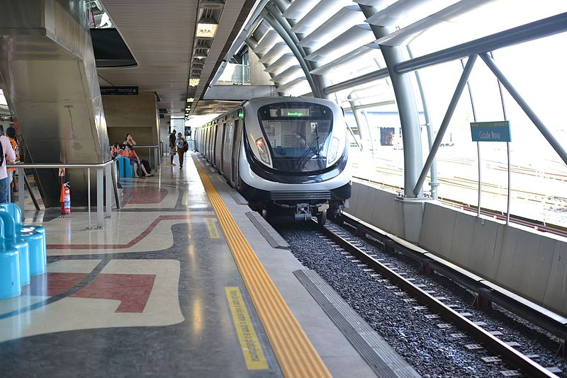
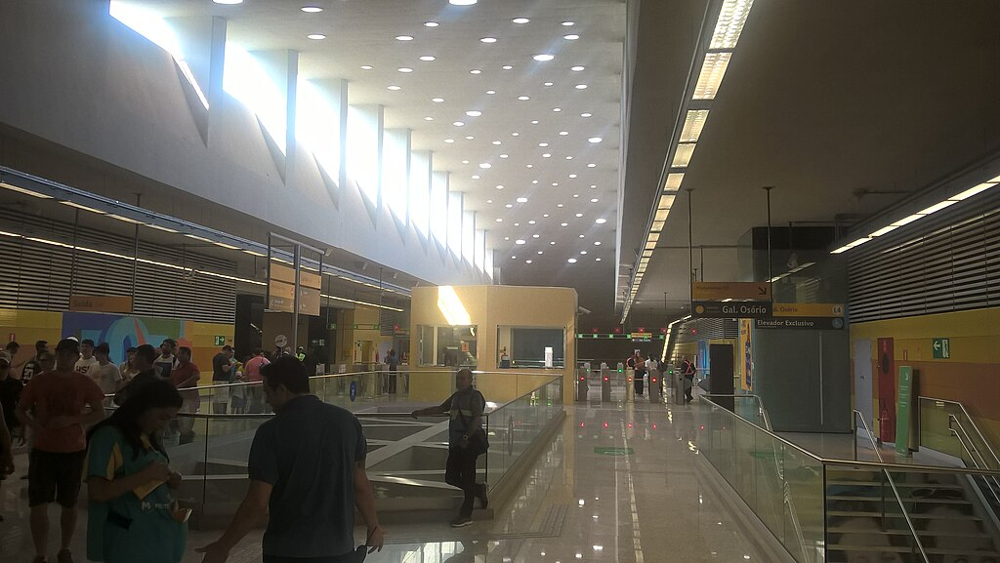
LE STADE DE RIO
Le stade Maracanã (en portugais : Estádio do Maracanã) est un stade de football situé à Rio de Janeiro au Brésil .
Son nom officiel est depuis 1966 Estádio Jornalista Mário Filho, en hommage au journaliste sportif et écrivain Mário Filho.
Inauguré le 16 juin 1950 pour la Coupe du monde de 1950, l’Estádio Municipal est dès sa construction appelé du nom du quartier Maracanã où il a été construit.
Si sa capacité initiale est de plus de 200 000 places, un record mondial à l'époque, elle a été depuis
progressivement réduite à 78 838 places en vue de la Coupe du monde 2014 et les Jeux olympiques d'été de 2016.
Appartenant à l'État de Rio de Janeiro, le stade accueille les plus grands événements sportifs ou musicaux. Outre le match décisif de la Coupe du monde 1950 et la finale de celle de 2014,
le stade Maracanã est utilisé par les grands clubs de Rio de Janeiro pour leurs matchs de prestige, en championnat brésilien ou en Copa Libertadores : Flamengo et Fluminense, qui s'affrontent lors d'un
célèbre derby appelé Fla-Flu, mais aussi Botafogo et Vasco da Gama.
En 1939, Jules Rimet, le président de la Fédération internationale de football association (FIFA), est à Rio de Janeiro et examine la candidature du Brésil pour la Coupe du monde de football de 19423.
Cette édition ne voit pas le jour à cause de la Seconde Guerre mondiale. Après le conflit, l'Europe étant
« en ruines », le Brésil obtient l'organisation de la Coupe du monde de football de 1949, qui est finalement décalée à 19503.
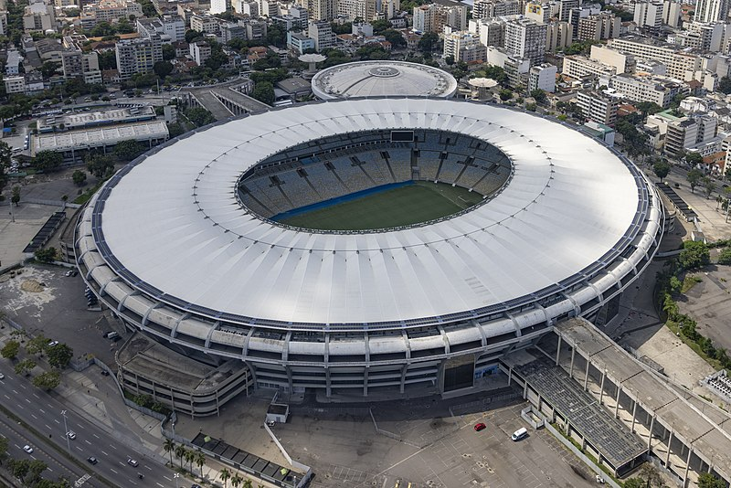
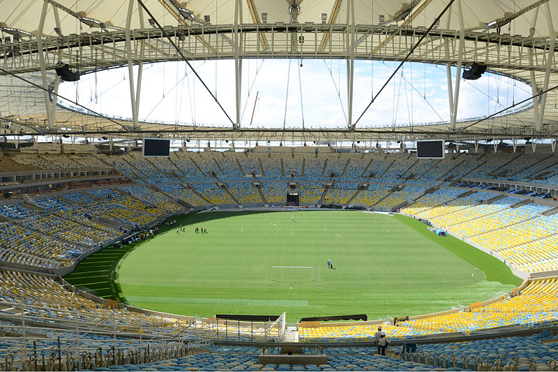
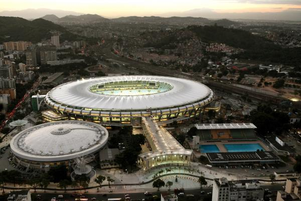
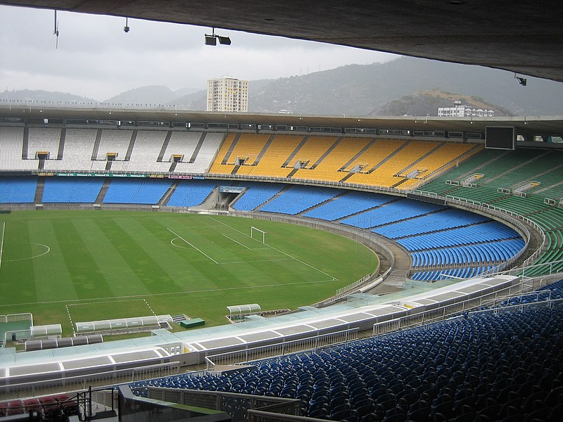
SANTA TERESA DE RIO
Le Centre (en portugais : Centro) est un quartier de classe moyenne de la zone centrale de la
ville de Rio de Janeiro, au Brésil. Le quartier est essentiellement commercial et touristique, mais possède aussi des bâtiments résidentiels.
Il accueille la plus grande concentration de bâtiments financiers, sièges d'entreprises (Petrobrás,parmi d'autres) Vale, Embratel
et bureaux de la ville. La caractéristique de ses bâtiments peut varier des constructions historiques à des gratte-ciel modernes.
Depuis 1763, lorsque la ville de Sao Sebastiao do Rio de Janeiro a été élevée au rang de siège administratif de la colonie portugaise du Brésil, jusqu'à 1960, lorsque la nouvelle capitale a été créée
à Brasilia District fédéral, le Centre a été le théâtre de certaines des plus importantes décisions et événements de l'histoire du pays.
Des vestiges architecturaux de ce passé subsistent aujourd'hui, convertis en d'importantes attractions touristiques.
Depuis 2009, le Centre a été l'objet d'un processus intense et rapide de récupération et de
revitalisation à travers le programme Porto Maravilha (« Port Merveille »), dirigé par la mairie de la ville avec le soutien du Ministère des Villes et du secteur privé.
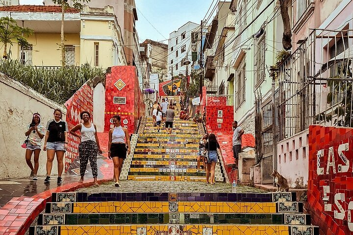
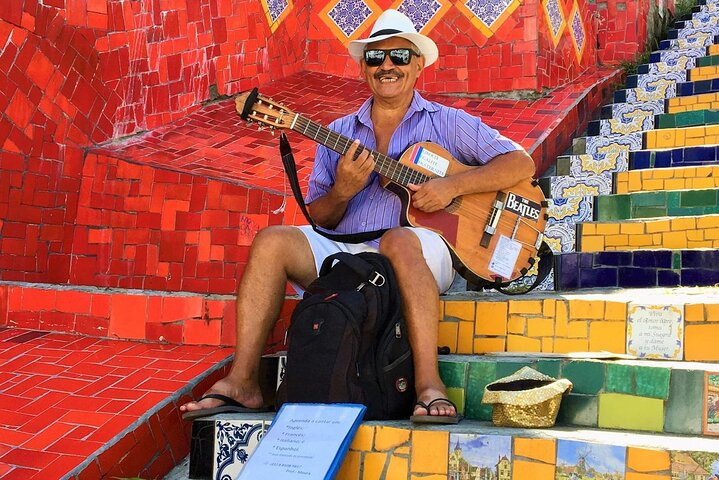
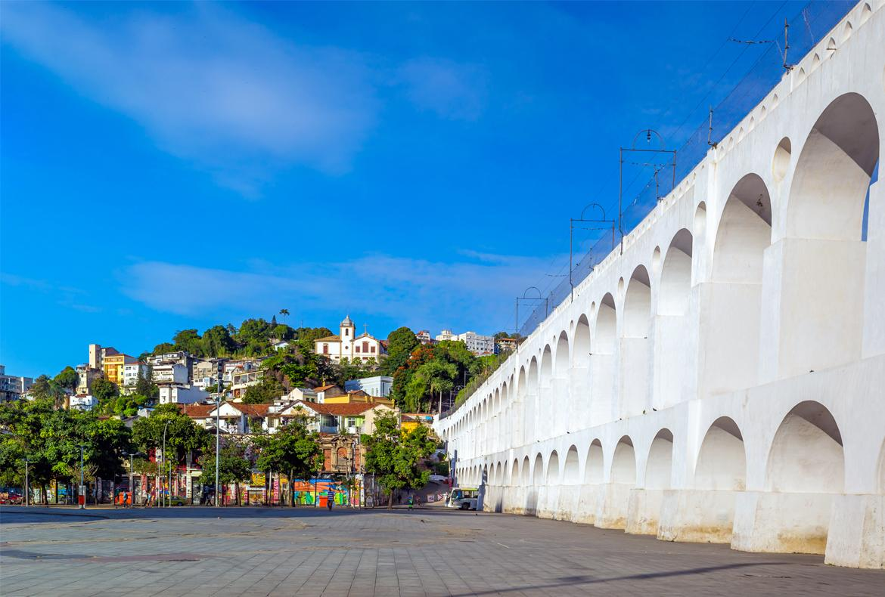
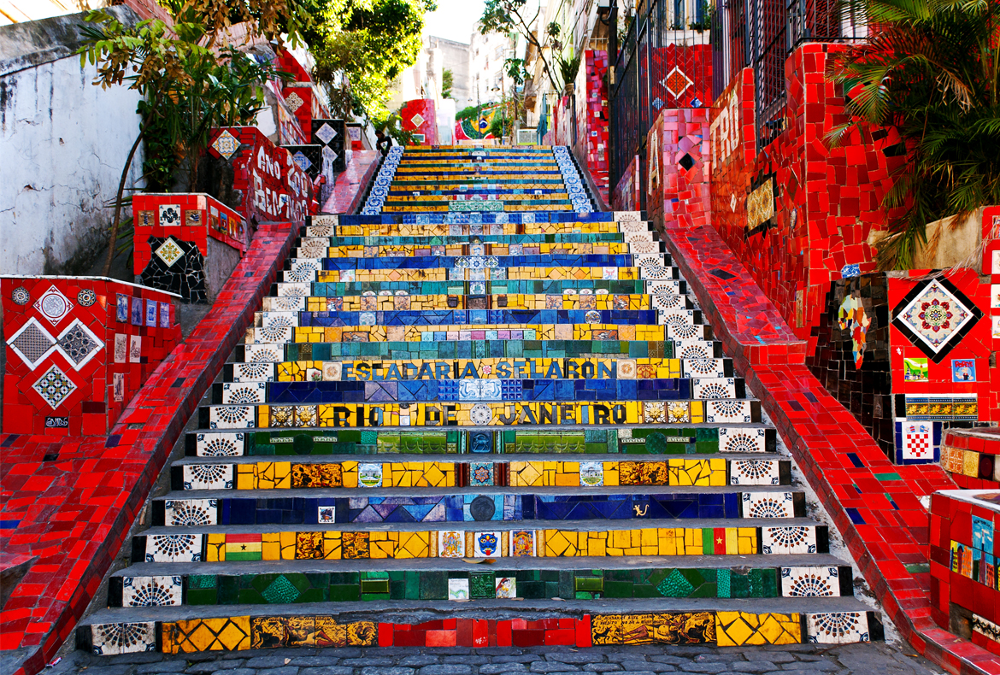
 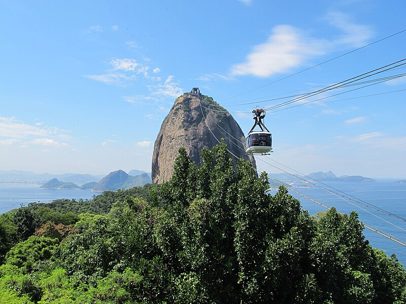
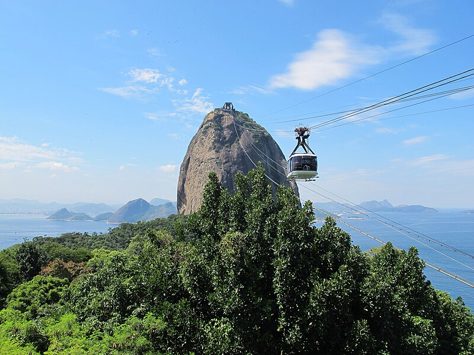